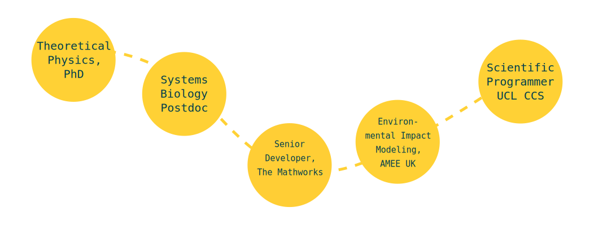
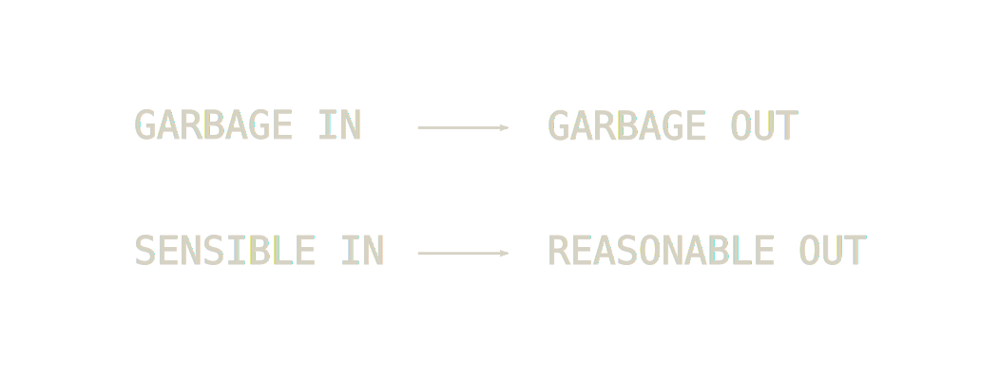
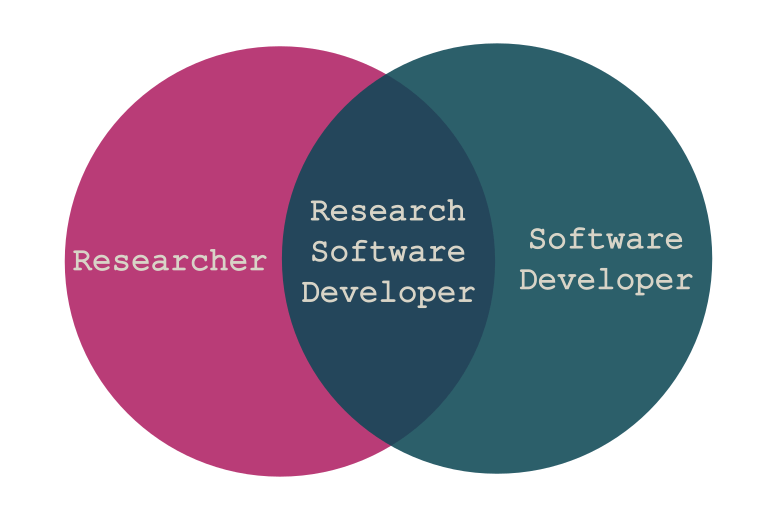

The Craftsperson
& The Scholar
by James Hetherington
James Hetherington
The State Of Research Software
The SIRO problem:
PhDWare
- Don't stop to check if it's been done before
- Code until it works
- Generate a figure
- Throw it away
LabWare
- Understood by one genius
- Implements great science, now
- FORTRAN in any language
- Code not engineered for readability
- Can't add new science
HPCWare
- Get a 5% improvement in performance…
- …on a particular architecture
- Publish a scaling graph
- Selection against:
- - Readability
- - Maintainability
- - Adaptability
ConsultantWare
- Little understanding of the science
- Over engineered
- Unmaintainable by the research group
Research Software Developers
Research Software Engineers

Reliability unlocks new science
HemeLB Setup Tool
- Can handle all geometries instead of 19 in 20
- Means can model changing geometries
Helping legacy code live
DCProgs
- Venerable Fortran
- Hasn't compiled since 2006
- Underpins Nature published research

Helping legacy code live
DCProgs
- Old code as "test oracle"
- Reimplemented in C++ and Python
- Use linear algebra and root finding libraries
- Not slower